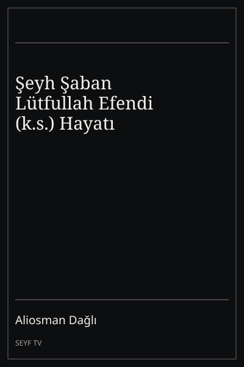

قضايا مهمة · الحلقة 4
كيف تحول ألم كربلاء إلى فخ طائفي؟
يوم عاشوراء، الذي شهد نجاة عظيمة لأنبياء مثل نوح وموسى ويونس عليهم السلام، هو أيضا المؤلم… الذي استشهد فيه الحسين رضي الله عنه، قرة عين النبي ﷺ، في كربلاء…
Aliosman Dağlı · 8:37 ·
النص بالتركية (لغة الحلقة الأصلية)
الوصف
Seyf TV ekranlarında "Mühim Meseleler" programının yeni bölümü ile Dr. Ali Osman Dağlı, Muharrem ayının ve Aşure gününün ardında yatan tarihi ve dini gerçekleri sarsıcı bir analizle masaya yatırıyor.
Hazreti Nuh, Hazreti Musa ve Hazreti Yunus gibi peygamberlerin büyük kurtuluşlarına sahne olan Aşure günü, aynı zamanda Peygamber Efendimiz Sallallahu Aleyhi ve Sellem'in göz bebeği Hazreti Hüseyin'in Kerbela'da şehit edildiği yürek yakan bir tarihtir. Ehl-i Sünnet olarak Hazreti Hüseyin'in acısını kalbimizin en derinlerinde hissederken, Dr. Ali Osman Dağlı çok kritik bir soru soruyor:
"Hazreti Ömer, Hazreti Osman, Hazreti Ali ve Hazreti Hasan da şehit edildi. Peki tefrika (bölücülük) çıkaranlar neden sadece Hazreti Hüseyin'in şehadetini sürekli kanatarak gündemde tutuyor? Bu sevginin arkasında peygamber muhabbeti mi var, yoksa mecusilerin ve eski Fars krallarının 'Acem Oyunu' mu?"
Hazreti Hüseyin'in Kûfe'ye bölünmek için değil, ümmeti birleştirmek ve sünneti ihya etmek için yürüdüğünü hatırlatan hocamız; programın sonunda Aşure orucunun nasıl tutulması gerektiğini ve Peygamberimizin "Biz Hazreti Musa'ya Yahudilerden daha yakınız" diyerek Yahudilere benzememek adına oruç tutma şeklini nasıl değiştirdiğini fıkhi boyutlarıyla açıklıyor.
İyi seyirler!

كتب المتحدث


Repertory of Thought
شراء

Lütuf Yolu: Kur'an ve Sünnetin Işığında Mânevî Hayat
Aliosman Dağlı
Şeyh Şaban Lütfullah Efendi (k.s.) Hayatı
Aliosman Dağlıمن البرنامج نفسه

قضايا مهمة
لماذا لا نتحمل النقد؟
Aliosman Dağlı 9:10

قضايا مهمة
الناس ينظرون إلى سيرتك لا إلى كلامك!
Aliosman Dağlı 7:27

قضايا مهمة
لا تصدق كل ما تقرأ!
Aliosman Dağlı 8:44

قضايا مهمة
من دون مرشد ستضل طريقك!
Aliosman Dağlı 8:33

قضايا مهمة
الفرق بين الاستقامة وادعاء امتلاك الحق
Aliosman Dağlı 7:33

قضايا مهمة
هل نستمع إلى كل فكرة؟ وأين الحد بين العقل والنقل؟
Aliosman Dağlı 10:41

قضايا مهمة
ما التدين الحقيقي؟
Aliosman Dağlı 9:41

قضايا مهمة
كيف نربي شابا مثاليا؟
Aliosman Dağlı 12:05